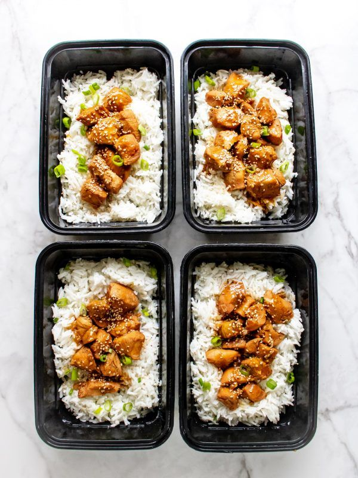

Instant Pot Honey Sesame Chicken

Description
Craving Chinese food? Try some of this Instant Pot Honey Sesame Chicken.
It tastes just as good as takeout. There’s a nice balance of umami from the coconut aminos, sweetness from the honey, and savory from the chicken stock.
It doesn’t take much time to make this dish either. In fact, it takes only 25 minutes.That’s because you’re making it in an Instant Pot. So you get slow-cooker quality chicken in a fraction of the time.
Ingredients
- 1.5 lbs. diced chicken breast
- 5 cups of white rice (cooked)
- 1/2 cup coconut aminos
- 1/3 cup chicken stock
- 1/4 cup honey
- 2 tablespoons toasted sesame oil
- 2 tablespoons chopped green onion + extra for serving
- 1 teaspoon minced garlic
- 1 tablespoon toasted sesame seeds + extra for serving
- 1 tablespoon gluten-free flour (optional)
Directions
- Combine coconut aminos, chicken stock, honey, sesame oil, green onion, minced garlic, and sesame seeds to make your marinade
- Mix your marinade into your chicken and toss everything into your Instant Pot on "manual" for 15 minutes
- That's it! You're done! Enjoy your Honey Sesame Chicken on top of some rice and sprinkle some sesame seeds and green onion for some extra texture and flavor!
Back to Top
More Recipes!